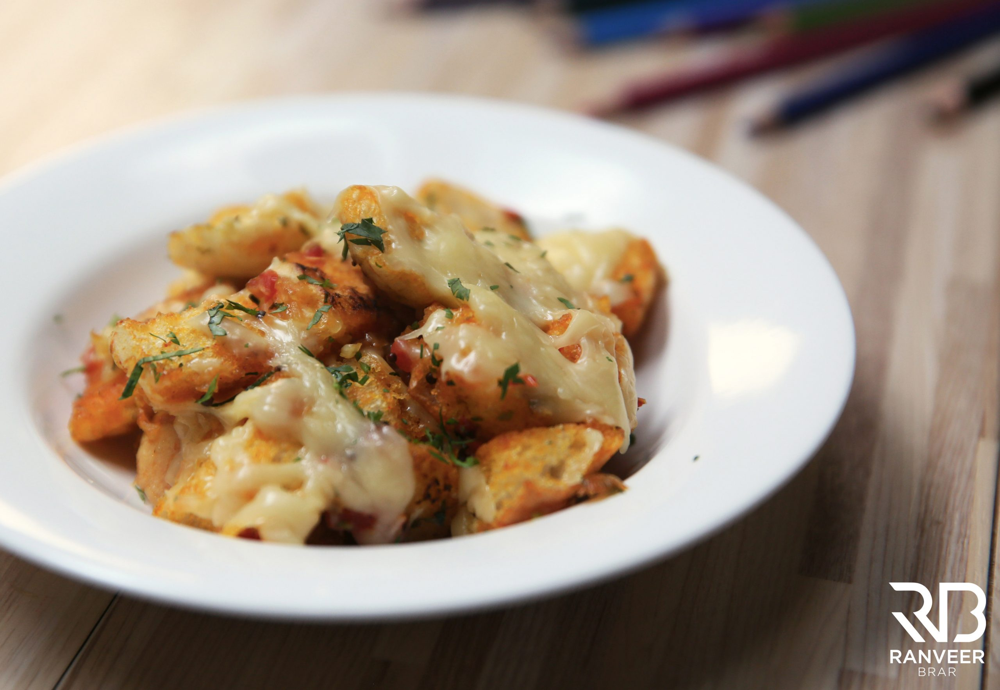

Cheese Bread Upma

Description
Cheese Bread Upma is a quick and easy to make breakfast!
Ingredients
- 4 laadi pav/ bread slices, cut into small cubes
- 1 tbsp Oil
- ½ tsp Mustard Seeds/Rai
- 5-6 Curry Leaves/Kaddi Patta
- A Pinch of Asafoetida/Hing
- 1 Small Sized Onion, finely chopped
- ½ tsp Ginger, chopped
- 1 medium Sized Tomato, finely chopped
- ½ tsp Turmeric/Haldi
- 1 tsp Red Chili Powder/Lal Mirch
- A pinch of Sugar
- Salt to taste
- ½ Cup Cheese, grated
- 1 tbsp Fresh Coriander/dhania, chopped
Steps
- Heat oil in a pan. Add mustard seeds, curry leaves and let them splutter.
- Add asafoetida, onion and sauté till translucent. Add ginger and sauté till aromatic.
- Add tomatoes and cook till mushy. Add turmeric, red chili powder, sugar and salt. Give a nice mix.
- Now toss the pav till nicely coated with masala. Spread the upma nicely all over the pan and top it with
grated cheese. Cover with a lid and cook for 2 mins or till cheese melts.
- Remove the lid and turn off the flame.
- Garnish with chopped coriander and serve hot.